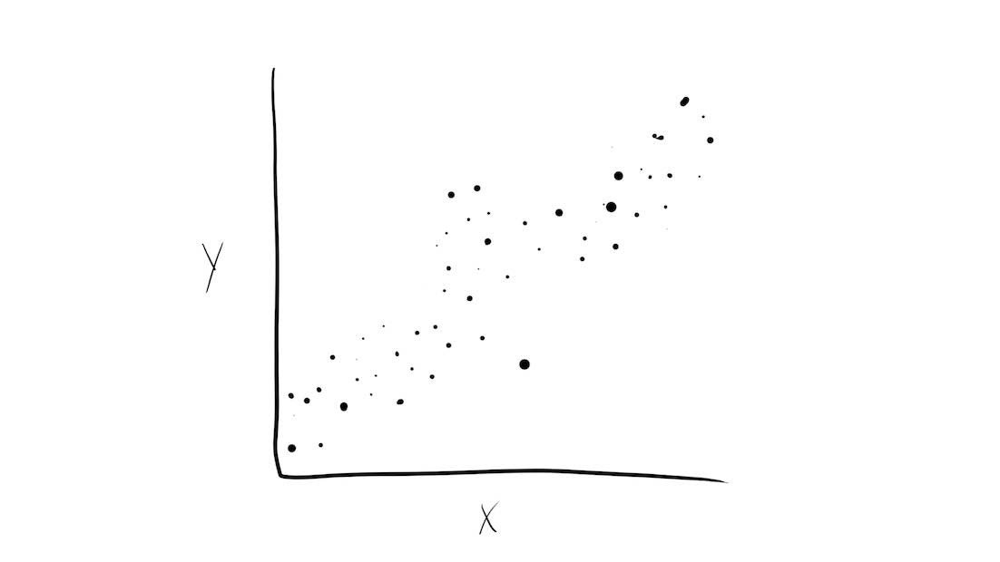
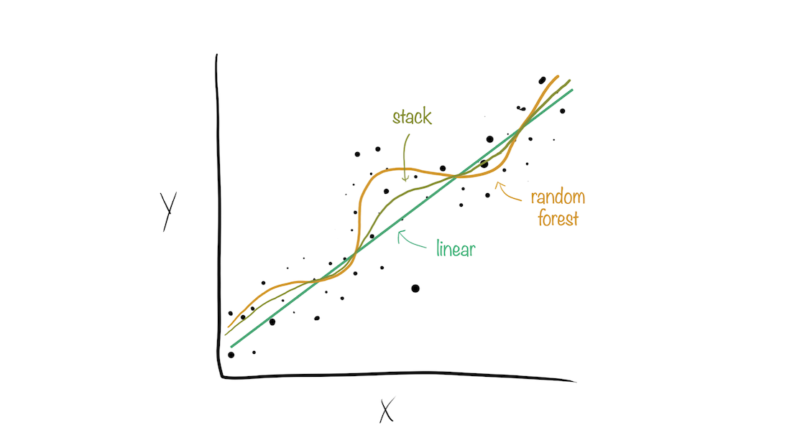

4 - Evaluating models
Machine learning with tidymodels
Metrics for model performance 

- RMSE: difference between the predicted and observed values ⬇️
- \(R^2\): squared correlation between the predicted and observed values ⬆️
- MAE: similar to RMSE, but mean absolute error ⬇️
Metrics for model performance 
Metrics for model performance 
Metrics for model performance 
Dangers of overfitting ⚠️

Dangers of overfitting ⚠️

Dangers of overfitting ⚠️ 
tree_fit %>%
augment(frog_train)
#> # A tibble: 456 × 6
#> treatment reflex age t_o_d latency .pred
#> <chr> <fct> <dbl> <fct> <dbl> <dbl>
#> 1 control full 467950 morning 33 39.8
#> 2 control full 464870 morning 19 66.7
#> 3 control full 464610 morning 2 66.7
#> 4 control full 469650 morning 39 39.8
#> 5 control full 467600 morning 42 39.8
#> 6 control full 410460 afternoon 20 59.8
#> 7 control full 427685 night 31 83.1
#> 8 control full 468530 morning 21 39.8
#> 9 gentamicin full 465800 morning 30 64.6
#> 10 control full 393475 afternoon 43 174.
#> # … with 446 more rowsWe call this “resubstition” or “repredicting the training set”
Dangers of overfitting ⚠️ 
We call this a “resubstition metric”
Dangers of overfitting ⚠️ 
Dangers of overfitting ⚠️ 
⚠️ Remember that we’re demonstrating overfitting
⚠️ Don’t use the test set until the end of your modeling analysis
Your turn

Use augment() and metrics() to compute regression metrics.
Compute the metrics for both training and testing data.
Notice the evidence of overfitting! ⚠️
05:00
Dangers of overfitting ⚠️ 
What if we want to compare more models?
And/or more model configurations?
And we want to understand if these are important differences?
Cross-validation

Cross-validation

Your turn
If we use 10 folds, what percent of the training data
- ends up in analysis
- ends up in assessment
for each fold?

03:00
Resampling 

vfold_cv(frog_train) ## v = 10 is default
#> # 10-fold cross-validation
#> # A tibble: 10 × 2
#> splits id
#> <list> <chr>
#> 1 <split [410/46]> Fold01
#> 2 <split [410/46]> Fold02
#> 3 <split [410/46]> Fold03
#> 4 <split [410/46]> Fold04
#> 5 <split [410/46]> Fold05
#> 6 <split [410/46]> Fold06
#> 7 <split [411/45]> Fold07
#> 8 <split [411/45]> Fold08
#> 9 <split [411/45]> Fold09
#> 10 <split [411/45]> Fold10Resampling 
Resampling 
What is in this?
Bootstrapping

Resampling 
bootstraps(frog_train)
#> # Bootstrap sampling
#> # A tibble: 25 × 2
#> splits id
#> <list> <chr>
#> 1 <split [456/159]> Bootstrap01
#> 2 <split [456/168]> Bootstrap02
#> 3 <split [456/175]> Bootstrap03
#> 4 <split [456/176]> Bootstrap04
#> 5 <split [456/162]> Bootstrap05
#> 6 <split [456/169]> Bootstrap06
#> 7 <split [456/161]> Bootstrap07
#> 8 <split [456/169]> Bootstrap08
#> 9 <split [456/177]> Bootstrap09
#> 10 <split [456/174]> Bootstrap10
#> # … with 15 more rowsYour turn
Create:
- cross-validation folds with stratification
- bootstrap folds (change
timesfrom the default) - validation resample
05:00
Resampling 
vfold_cv(frog_train, strata = latency)
#> # 10-fold cross-validation using stratification
#> # A tibble: 10 × 2
#> splits id
#> <list> <chr>
#> 1 <split [408/48]> Fold01
#> 2 <split [408/48]> Fold02
#> 3 <split [408/48]> Fold03
#> 4 <split [409/47]> Fold04
#> 5 <split [411/45]> Fold05
#> 6 <split [412/44]> Fold06
#> 7 <split [412/44]> Fold07
#> 8 <split [412/44]> Fold08
#> 9 <split [412/44]> Fold09
#> 10 <split [412/44]> Fold10Stratification often helps, with very little downside
Resampling 
bootstraps(frog_train, times = 10)
#> # Bootstrap sampling
#> # A tibble: 10 × 2
#> splits id
#> <list> <chr>
#> 1 <split [456/162]> Bootstrap01
#> 2 <split [456/165]> Bootstrap02
#> 3 <split [456/159]> Bootstrap03
#> 4 <split [456/169]> Bootstrap04
#> 5 <split [456/168]> Bootstrap05
#> 6 <split [456/171]> Bootstrap06
#> 7 <split [456/175]> Bootstrap07
#> 8 <split [456/168]> Bootstrap08
#> 9 <split [456/166]> Bootstrap09
#> 10 <split [456/156]> Bootstrap10Resampling 
A validation split is just another type of resample
Evaluating model performance 
set.seed(123)
frog_folds <- vfold_cv(frog_train, v = 10, strata = latency)
frog_folds
#> # 10-fold cross-validation using stratification
#> # A tibble: 10 × 2
#> splits id
#> <list> <chr>
#> 1 <split [408/48]> Fold01
#> 2 <split [408/48]> Fold02
#> 3 <split [408/48]> Fold03
#> 4 <split [409/47]> Fold04
#> 5 <split [411/45]> Fold05
#> 6 <split [412/44]> Fold06
#> 7 <split [412/44]> Fold07
#> 8 <split [412/44]> Fold08
#> 9 <split [412/44]> Fold09
#> 10 <split [412/44]> Fold10Set the seed when creating resamples
Evaluating model performance 

tree_res <- fit_resamples(tree_wflow, frog_folds)
tree_res
#> # Resampling results
#> # 10-fold cross-validation using stratification
#> # A tibble: 10 × 4
#> splits id .metrics .notes
#> <list> <chr> <list> <list>
#> 1 <split [408/48]> Fold01 <tibble [2 × 4]> <tibble [0 × 3]>
#> 2 <split [408/48]> Fold02 <tibble [2 × 4]> <tibble [0 × 3]>
#> 3 <split [408/48]> Fold03 <tibble [2 × 4]> <tibble [0 × 3]>
#> 4 <split [409/47]> Fold04 <tibble [2 × 4]> <tibble [0 × 3]>
#> 5 <split [411/45]> Fold05 <tibble [2 × 4]> <tibble [0 × 3]>
#> 6 <split [412/44]> Fold06 <tibble [2 × 4]> <tibble [0 × 3]>
#> 7 <split [412/44]> Fold07 <tibble [2 × 4]> <tibble [0 × 3]>
#> 8 <split [412/44]> Fold08 <tibble [2 × 4]> <tibble [0 × 3]>
#> 9 <split [412/44]> Fold09 <tibble [2 × 4]> <tibble [0 × 3]>
#> 10 <split [412/44]> Fold10 <tibble [2 × 4]> <tibble [0 × 3]>Where are the fitted models??!??
Evaluating model performance 
tree_res <- fit_resamples(tree_wflow, frog_folds)
tree_res
#> # Resampling results
#> # 10-fold cross-validation using stratification
#> # A tibble: 10 × 4
#> splits id .metrics .notes
#> <list> <chr> <list> <list>
#> 1 <split [408/48]> Fold01 <tibble [2 × 4]> <tibble [0 × 3]>
#> 2 <split [408/48]> Fold02 <tibble [2 × 4]> <tibble [0 × 3]>
#> 3 <split [408/48]> Fold03 <tibble [2 × 4]> <tibble [0 × 3]>
#> 4 <split [409/47]> Fold04 <tibble [2 × 4]> <tibble [0 × 3]>
#> 5 <split [411/45]> Fold05 <tibble [2 × 4]> <tibble [0 × 3]>
#> 6 <split [412/44]> Fold06 <tibble [2 × 4]> <tibble [0 × 3]>
#> 7 <split [412/44]> Fold07 <tibble [2 × 4]> <tibble [0 × 3]>
#> 8 <split [412/44]> Fold08 <tibble [2 × 4]> <tibble [0 × 3]>
#> 9 <split [412/44]> Fold09 <tibble [2 × 4]> <tibble [0 × 3]>
#> 10 <split [412/44]> Fold10 <tibble [2 × 4]> <tibble [0 × 3]>Where are the fitted models??!?? üóëÔ∏è
For more advanced use cases, you can extract and save them: https://www.tmwr.org/resampling.html#extract
Evaluating model performance 
We can reliably measure performance using only the training data üéâ
Comparing metrics 
How do the metrics from resampling compare to the metrics from training and testing?
The RMSE previously was
- 49.36 for the training set
- 59.16 for test set
Remember that:
⚠️ the training set gives you overly optimistic metrics
⚠️ the test set is precious
Evaluating model performance 
# Save the assessment set results
ctrl_frog <- control_resamples(save_pred = TRUE)
tree_res <- fit_resamples(tree_wflow, frog_folds, control = ctrl_frog)
tree_preds <- collect_predictions(tree_res)
tree_preds
#> # A tibble: 456 × 5
#> id .pred .row latency .config
#> <chr> <dbl> <int> <dbl> <chr>
#> 1 Fold01 39.6 1 33 Preprocessor1_Model1
#> 2 Fold01 72.1 3 2 Preprocessor1_Model1
#> 3 Fold01 63.8 9 30 Preprocessor1_Model1
#> 4 Fold01 72.1 13 46 Preprocessor1_Model1
#> 5 Fold01 43.3 28 11 Preprocessor1_Model1
#> 6 Fold01 61.7 35 41 Preprocessor1_Model1
#> 7 Fold01 39.6 51 43 Preprocessor1_Model1
#> 8 Fold01 134. 70 20 Preprocessor1_Model1
#> 9 Fold01 70.6 74 21 Preprocessor1_Model1
#> 10 Fold01 39.6 106 14 Preprocessor1_Model1
#> # … with 446 more rows
Create a random forest model 

Create a random forest model 

rf_wflow <- workflow(latency ~ ., rf_spec)
rf_wflow
#> ══ Workflow ══════════════════════════════════════════════════════════
#> Preprocessor: Formula
#> Model: rand_forest()
#>
#> ── Preprocessor ──────────────────────────────────────────────────────
#> latency ~ .
#>
#> ── Model ─────────────────────────────────────────────────────────────
#> Random Forest Model Specification (regression)
#>
#> Main Arguments:
#> trees = 1000
#>
#> Computational engine: rangerYour turn
Use fit_resamples() and rf_wflow to:
- keep predictions
- compute metrics
- plot true vs. predicted values
05:00
Evaluating model performance 
ctrl_frog <- control_resamples(save_pred = TRUE)
# Random forest uses random numbers so set the seed first
set.seed(2)
rf_res <- fit_resamples(rf_wflow, frog_folds, control = ctrl_frog)
collect_metrics(rf_res)
#> # A tibble: 2 × 6
#> .metric .estimator mean n std_err .config
#> <chr> <chr> <dbl> <int> <dbl> <chr>
#> 1 rmse standard 55.9 10 1.71 Preprocessor1_Model1
#> 2 rsq standard 0.370 10 0.0306 Preprocessor1_Model1
Your turn
When do you think a workflow set would be useful?
03:00
The final fit 
Suppose that we are happy with our random forest model.
Let’s verify our performance using the test set.
We’ve shown you fit() and predict() (+ augment()) but there is a shortcut:
# frog_split has train + test info
final_fit <- last_fit(rf_wflow, frog_split)
final_fit
#> # Resampling results
#> # Manual resampling
#> # A tibble: 1 × 6
#> splits id .metrics .notes .predictions .workflow
#> <list> <chr> <list> <list> <list> <list>
#> 1 <split [456/116]> train/test split <tibble> <tibble> <tibble> <workflow>What is in final_fit? 
These are metrics computed with the test set
What is in final_fit? 
collect_predictions(final_fit)
#> # A tibble: 116 × 5
#> id .pred .row latency .config
#> <chr> <dbl> <int> <dbl> <chr>
#> 1 train/test split 43.5 1 22 Preprocessor1_Model1
#> 2 train/test split 104. 3 106 Preprocessor1_Model1
#> 3 train/test split 76.2 6 39 Preprocessor1_Model1
#> 4 train/test split 42.5 8 50 Preprocessor1_Model1
#> 5 train/test split 43.5 10 63 Preprocessor1_Model1
#> 6 train/test split 43.1 14 25 Preprocessor1_Model1
#> 7 train/test split 51.5 16 48 Preprocessor1_Model1
#> 8 train/test split 160. 17 91 Preprocessor1_Model1
#> 9 train/test split 50.9 32 11 Preprocessor1_Model1
#> 10 train/test split 171. 33 109 Preprocessor1_Model1
#> # … with 106 more rowsThese are predictions for the test set

What is in final_fit? 
extract_workflow(final_fit)
#> ══ Workflow [trained] ════════════════════════════════════════════════
#> Preprocessor: Formula
#> Model: rand_forest()
#>
#> ── Preprocessor ──────────────────────────────────────────────────────
#> latency ~ .
#>
#> ── Model ─────────────────────────────────────────────────────────────
#> Ranger result
#>
#> Call:
#> ranger::ranger(x = maybe_data_frame(x), y = y, num.trees = ~1000, num.threads = 1, verbose = FALSE, seed = sample.int(10^5, 1))
#>
#> Type: Regression
#> Number of trees: 1000
#> Sample size: 456
#> Number of independent variables: 4
#> Mtry: 2
#> Target node size: 5
#> Variable importance mode: none
#> Splitrule: variance
#> OOB prediction error (MSE): 3124.581
#> R squared (OOB): 0.3531818Use this for prediction on new data, like for deploying
Your turn
End of the day discussion!
Which model do you think you would decide to use?
What surprised you the most?
What is one thing you are looking forward to for tomorrow?
05:00
Why choose just one final_fit? 

Model stacks generate predictions that are informed by several models.
Why choose just one final_fit? 

Why choose just one final_fit? 

Why choose just one final_fit? 

Why choose just one final_fit? 

Why choose just one final_fit? 
Building a model stack 
- Define candidate members
- Initialize a data stack object
- Iteratively add candidate ensemble members to the data stack
- Evaluate how to combine their predictions
- Fit candidate ensemble members with non-zero stacking coefficients
- Predict on new data!
Building a model stack 
Building a model stack 
- Define candidate members
Start out with a linear regression:
Building a model stack 
lr_res
#> # Resampling results
#> # 10-fold cross-validation using stratification
#> # A tibble: 10 × 5
#> splits id .metrics .notes .predictions
#> <list> <chr> <list> <list> <list>
#> 1 <split [408/48]> Fold01 <tibble [2 × 4]> <tibble [0 × 3]> <tibble [48 × 4]>
#> 2 <split [408/48]> Fold02 <tibble [2 × 4]> <tibble [0 × 3]> <tibble [48 × 4]>
#> 3 <split [408/48]> Fold03 <tibble [2 × 4]> <tibble [0 × 3]> <tibble [48 × 4]>
#> 4 <split [409/47]> Fold04 <tibble [2 × 4]> <tibble [0 × 3]> <tibble [47 × 4]>
#> 5 <split [411/45]> Fold05 <tibble [2 × 4]> <tibble [0 × 3]> <tibble [45 × 4]>
#> 6 <split [412/44]> Fold06 <tibble [2 × 4]> <tibble [0 × 3]> <tibble [44 × 4]>
#> 7 <split [412/44]> Fold07 <tibble [2 × 4]> <tibble [0 × 3]> <tibble [44 × 4]>
#> 8 <split [412/44]> Fold08 <tibble [2 × 4]> <tibble [0 × 3]> <tibble [44 × 4]>
#> 9 <split [412/44]> Fold09 <tibble [2 × 4]> <tibble [0 × 3]> <tibble [44 × 4]>
#> 10 <split [412/44]> Fold10 <tibble [2 × 4]> <tibble [0 × 3]> <tibble [44 × 4]>Building a model stack 
Then, a random forest:
Building a model stack 
rf_res
#> # Resampling results
#> # 10-fold cross-validation using stratification
#> # A tibble: 10 × 5
#> splits id .metrics .notes .predictions
#> <list> <chr> <list> <list> <list>
#> 1 <split [408/48]> Fold01 <tibble [2 × 4]> <tibble [0 × 3]> <tibble [48 × 4]>
#> 2 <split [408/48]> Fold02 <tibble [2 × 4]> <tibble [0 × 3]> <tibble [48 × 4]>
#> 3 <split [408/48]> Fold03 <tibble [2 × 4]> <tibble [0 × 3]> <tibble [48 × 4]>
#> 4 <split [409/47]> Fold04 <tibble [2 × 4]> <tibble [0 × 3]> <tibble [47 × 4]>
#> 5 <split [411/45]> Fold05 <tibble [2 × 4]> <tibble [0 × 3]> <tibble [45 × 4]>
#> 6 <split [412/44]> Fold06 <tibble [2 × 4]> <tibble [0 × 3]> <tibble [44 × 4]>
#> 7 <split [412/44]> Fold07 <tibble [2 × 4]> <tibble [0 × 3]> <tibble [44 × 4]>
#> 8 <split [412/44]> Fold08 <tibble [2 × 4]> <tibble [0 × 3]> <tibble [44 × 4]>
#> 9 <split [412/44]> Fold09 <tibble [2 × 4]> <tibble [0 × 3]> <tibble [44 × 4]>
#> 10 <split [412/44]> Fold10 <tibble [2 × 4]> <tibble [0 × 3]> <tibble [44 × 4]>Building a model stack 
- Initialize a data stack object
Building a model stack 
- Iteratively add candidate ensemble members to the data stack
Building a model stack 
- Evaluate how to combine their predictions
Building a model stack 
- Fit candidate ensemble members with non-zero stacking coefficients
Building a model stack 
- Predict on new data!